Guidelines for creating uniform, professional data visualizations
Author
Urban Institute
Published
April 27, 2026
Use this data visualization style guide to create a uniform look and feel to all of Tax Policy Center’s charts and graphs. This site contains guidelines that are in line with data visualization best practices and proven design principles. It also eliminates the burden of design and color decisions when creating charts.
These guidelines are primarily for publishing charts to the website. Minor sizing and typographic adjustments need to be made to insert charts into documents.
⚠️ STOP! - Required Setup
Before doing anything, you must download TPC’s font to your computer.
All done! If you have any questions about installing fonts, contact Lillian Hunter.
1 Typography
taxpolicycenter.org uses the fonts Avenir LT Pro and Calvert. When possible, those fonts should also be used to create charts. If the “Avenir TPC” font family is not installed on your computer, please download the font. Good chart typography creates a hierarchy among elements and guides the reader through the visual.
Element
Typeface
Web Size
Print Size
Case
Color
Notes
Figure number
Avenir TPC (bold)
11
8
ALL CAPS
#DD0806
NOT included in graphs made for web. If adding graphs to a print/pdf publication, follow template instructions.
Title
Avenir TPC (bold)
20
12
Title Case
#000000
The main point of the chart. Try to keep shorter than two lines and avoid qualifiers. Only included in graphs made for web.
Subtitle
Avenir TPC
16
9.5
Sentence case
#000000
Use this to add qualifiers or further clarification to the title. Only included in graphs made for web.
X and Y axis titles
Avenir TPC (Italic)
12
8.5
Sentence case
#000000
Always horizontal, above the top axis label. Include units or multipliers in parenthesis (millions), ($2014)
X and Y axis labels
Avenir TPC
12
8.5
Sentence case
#000000
Always horizontal, avoid units or multipliers. Those should be added to the axis title in parenthesis.
Key labels
Avenir TPC
12
9.5
Sentence case
#000000
Always horizontal. Avoid redundant key labels if possible.
Direct labels
Avenir TPC
12
9.5
Sentence case
#000000
Use for line or column charts with three or fewer series.
Data-point label
Avenir TPC
11
8.5
Sentence case
#000000
Always horizontal. No units or multipliers. Only directly label columns if there are fewer than 10 total columns.
Source and Notes
Avenir TPC
11
8
Sentence case
#000000
Bold "Source:" and "Notes:" as well as any statistical significance indicators.
The links below will always feature the most recent TPC templates. Please use them whenever you start a new project. Follow Urban’s guide to the publication process!
Also remember that if TPC is posting a publication, you need to fill out an R&R. The R&R requires a short overview (or abstract) of your publication. See Urban’s guide to writing abstracts/overviews.
Note: TPC’s templates have recently been updated.
2.1 Word Templates
2.1.1 Shorter Publications
Standard Brief (~10–20 pages): Use to summarize research findings and highlight policy recommendations. Does not support a table of contents or appendixes.
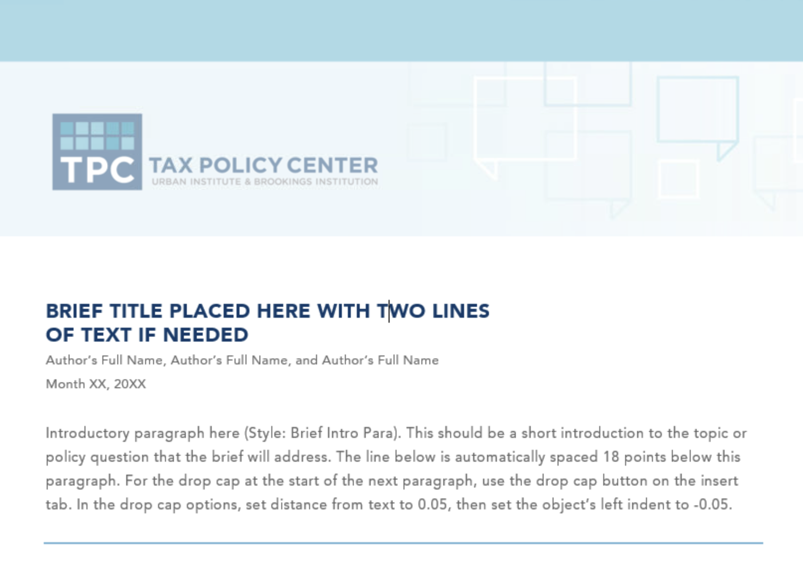
2-page fact sheet template: Use only as a companion product to summarize findings from a report or brief. Does not support citations.
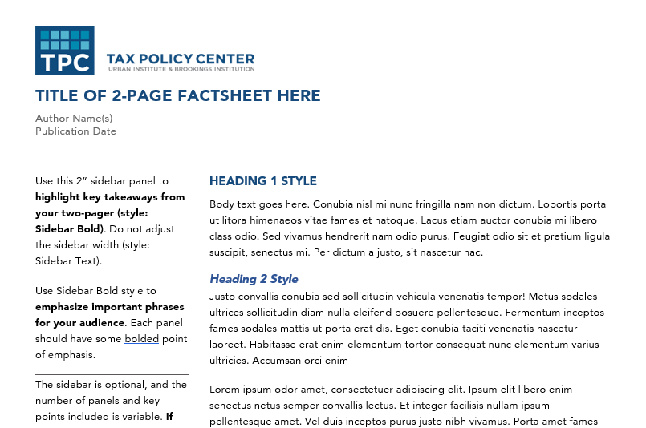
Longer fact sheet template: Use for short, informal, and less technical products. Similar to the two-page fact sheet template but supports notes and citations and can be a standalone product. Any fact sheet longer than two pages must use this template.
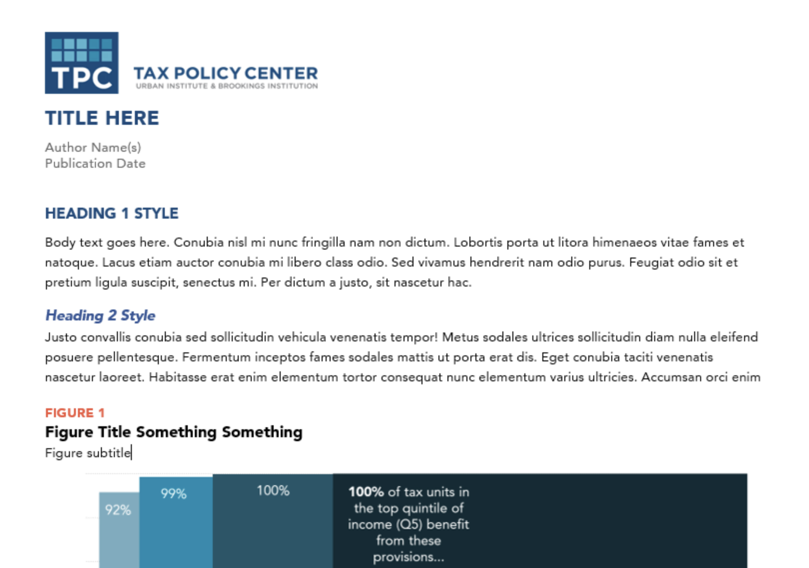
2.1.2 Research Reports and Papers
Standard Report: Use for reports up to 60 pages long. Includes a table of contents, executive summary, appendixes, and an optional custom cover image.
Working Paper: Use for preliminary findings and papers submitted to journals. Working papers do not receive standard copyediting support.
Datawrapper is an online, browser-based tool that enables users to create interactive and responsive charts and choropleth maps. Sensitive data or data with PII should not be used. Here’s an overview of chart types supported in Datawrapper.
Datawrapper graphs are appropriate for web-only publications like blogs and features. Datawrapper graphs cannot be used in print or pdf publications. Contact Lillian Hunter to have graphs made with TPC styling.
3.2 Excel
Excel is one of two tools for creating publication-ready TPC graphs.
The main content well on TPC publications is approximately 6.75” wide or 720px in Excel. Because Excel’s chart title and subtitle fields are limiting in terms of formatting, we use a regular text box for all the text at the top of the graphic, as well as the source and notes text at the bottom. We also include a TPC logo in the upper-right corner of the figure so that when media members copy-paste our charts into their stories, TPC’s brand is on them. If you use the add-in tool, the logo and chart parts will automatically size properly.
DO NOT RESIZE CHARTS.
3.2.1 Tips
The TPC graphing style add-in formats charts to a width of 6.75”, so it is important to keep the data density as high as possible. Always include a text reference to your figure to give the data context to the content of the report/brief/blog post. If your chart has only two or three values, consider a couple sentences of text to explain the figure.
If you find your explanatory sentences do a better job of distilling the information, you might want to consider going without a chart.
Title: Keep it short and simple. Try to explain the chart in a few words. If you need to add qualifiers (e.g., years, dollars) or further clarification, use a subtitle. For bonus credit: consider writing a title that “works as a headline” and conveys the main point the reader should take away from the graph.
Source and Notes: This is where the technical information about methodology can go. Try to avoid putting this information in the title, labels, or on the chart.
Legends: Stretch legends across the top of the chart, or to the right. Order them in a logical way, mirroring the order of the data in the charts.
3.2.2 Graphs for Web
3.2.3 Graphs for Print
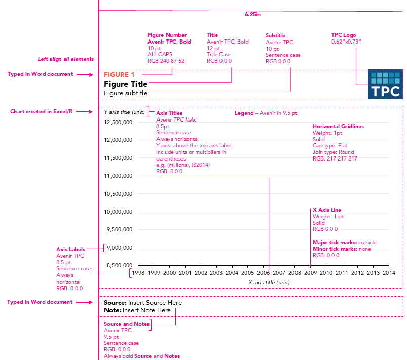
3.3 R
tpcthemes is a set of utilities for creating TPC–themed plots and maps in R. In addition to ggplot styling, the package contains tools for wrangling common TPC datasets. The package is in development.
The package makes ggplot2 output align more closely with this style guide, but it does not produce publication-ready graphics. Visual styles must still be edited using your project’s normal editing workflow. Exporting charts as PDFs rather than image files (e.g., PNG, JPEG) will allow them to be edited more easily.
Run the following code to install or update tpcthemes:
You must have Github credentials configured in your R environment in order to access this package.
4 Color
TPC’s main colors are deep blue, teal, black, and gray. Poppy is used as a highlight color throughout the new taxpolicycenter.org web site.
4.1 Color Selection Principles
When selecting colors for charts and graphs, we must first consider the type of data we are presenting. Usually, data can be grouped into one of two main groups: categorical or sequential.
Categorical palettes are best when you want to distinguish discrete chunks of data that do not have an inherent ordering.
Sequential color mapping is appropriate when data range from relatively low or uninteresting values to relatively high or interesting values. For sequential data, it’s better to use a palette that has a relatively subtle shift in hue accompanied by a large shift in brightness and saturation. This approach naturally draws the eye to the relatively important parts of the data.
The following color combinations are intended to take some of the guess work out of the process of assigning colors to charts. They’re only examples, and can be mixed-and-matched depending on the story you are trying to tell with your data.
4.1.1 Color Combinations
4.2 Main Graphic Colors
Deep Blue
#174a7c
Teal
#008bb0
Poppy
#F0573E
Gray
#bcbec0
4.2.1 One Group
Teal
#008bb0
Deep Blue
#174a7c
4.2.2 Two Groups (Categorical)
Option 1: Teal + Black
Teal
#008bb0
Black
#000000
Option 2: Teal + Gray
Teal
#008bb0
Gray
#bcbec0
Option 3: Teal + Yellow
Teal
#008bb0
Yellow
#fcb64b
Option 4: Poppy + Black
Poppy
#F0573E
Black
#000000
Option 5: Poppy + Deep Blue
Poppy
#F0573E
Deep Blue
#174a7c
4.2.3 Two Groups (Sequential)
Teal (Dark)
#008bb0
Teal (Light)
#b0d0db
4.2.4 Three Groups (Categorical)
Option 1: Teal + Poppy + Yellow
Teal
#008bb0
Poppy
#F0573E
Yellow
#fcb64b
Option 2: Teal + Yellow + Black
Teal
#008bb0
Yellow
#fcb64b
Black
#000000
Option 3: Gray + Deep Blue + Poppy
Gray
#bcbec0
Deep Blue
#174a7c
Poppy
#F0573E
4.2.5 Three Groups (Sequential)
Teal (1/3)
#b0d0db
Teal (2/3)
#75adc0
Teal
#008bb0
4.2.6 Four Groups (Categorical)
Option 1: Deep Blue + Poppy + Yellow + Teal
Deep Blue
#174a7c
Poppy
#F0573E
Yellow
#fcb64b
Teal
#008bb0
Option 2: Teal + Black + Poppy + Gray
Teal
#008bb0
Black
#000000
Poppy
#F0573E
Gray
#bcbec0
4.2.7 Four Groups (Sequential)
Teal (1/4)
#b0d0db
Teal (2/4)
#75adc0
Teal
#008bb0
Teal (4/4)
#1d5669
4.2.8 Five Groups (Categorical)
Option 1: Deep Blue + Poppy + Yellow + Teal + Gray
Deep Blue
#174a7c
Poppy
#F0573E
Yellow
#fcb64b
Teal
#008bb0
Gray
#bcbec0
Option 2: Teal + Teal (2/6) + Teal-Gray + Poppy + Deep Blue
Teal
#008bb0
Teal (2/6)
#95c0cf
Teal-Gray
#3f4f56
Poppy
#F0573E
Deep Blue
#174a7c
Option 3: Teal + Yellow + Teal-Gray + Poppy + Deep Blue
Teal
#008bb0
Yellow
#fcb64b
Teal-Gray
#3f4f56
Poppy
#F0573E
Deep Blue
#174a7c
4.2.9 Five Groups (Sequential)
Teal (1/5)
#b0d0db
Teal (2/5)
#75adc0
Teal
#008bb0
Teal (4/5)
#1d5669
Teal (5/5)
#0e2b35
4.2.10 Six Groups (Categorical)
Option 1: Deep Blue + Poppy + Yellow + Teal + Gray + Black
Deep Blue
#174a7c
Poppy
#F0573E
Yellow
#fcb64b
Teal
#008bb0
Gray
#bcbec0
Black
#000000
Option 2: Teal + Teal (2/6) + Teal-Gray + Poppy + Deep Blue + Gray
Teal
#008bb0
Teal (2/6)
#95c0cf
Teal-Gray
#3f4f56
Poppy
#F0573E
Deep Blue
#174a7c
Gray
#bcbec0
4.2.11 Six Groups (Sequential)
Teal (1/6)
#cae0e7
Teal (2/6)
#95c0cf
Teal (3/6)
#60a1b6
Teal
#008bb0
Teal (5/6)
#1d5669
Teal (6/6)
#0e2b35
4.2.12 Seven or More Groups ⚠️
Consider consolidating categories or breaking up the chart. Seven groups is really too many.
library(ggplot2)library(dplyr)library(tpcthemes)extrafont::loadfonts(device ="win", quiet =TRUE)# Datadata <-data.frame(quintile =factor(c("Lowest Quintile", "Second Quintile", "Middle Quintile", "Fourth Quintile", "Top Quintile"),levels =c("Lowest Quintile", "Second Quintile", "Middle Quintile", "Fourth Quintile", "Top Quintile")),current_law =c(6, 12, 17.9, 20.5, 26.4),obama =c(-1.9, 8.2, 15.7, 18.9, 27.2),mccain =c(5.9, 11.7, 17.4, 19.5, 24.3) ) %>% tidyr::pivot_longer(cols =-quintile, names_to ="scenario", values_to ="value") %>%mutate(scenario =case_when( scenario =="current_law"~"Current Law", scenario =="obama"~"Obama", scenario =="mccain"~"McCain" ),scenario =factor(scenario, levels =c("Current Law", "Obama", "McCain")))# Define custom colorscolors <-c("Current Law"="#bcbec0", # light grey"Obama"="#174a7c", # dark blue"McCain"="#f0573e") # poppy# Create chartggplot(data, aes(x = quintile, y = value, fill = scenario)) +geom_col(position ="dodge") +geom_hline(yintercept =0, color ="black", size =0.5, ) +# suppress x-axis line and add a horizontal line at y = 0scale_fill_manual(values = colors) +scale_y_continuous(breaks =seq(-5,30,5),limits =c(-5,30)) +tpc_theme() +labs(title ="Impact of Candidates' Tax Proposals on Workers",subtitle ="Average federal tax rate by income percentile, 2009",x =NULL,y =NULL,caption ="Source: Urban-Brookings Tax Policy Center Microsimulation Model (version 0308-6).",fill ="Scenario" ) +theme(axis.text.x =element_text(angle =45, hjust =1),axis.ticks.x =element_blank(),axis.line.x =element_blank())
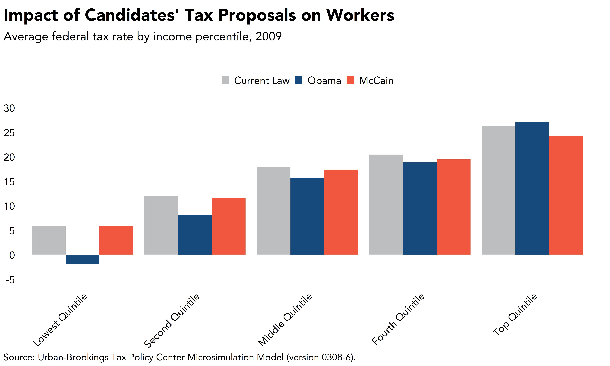
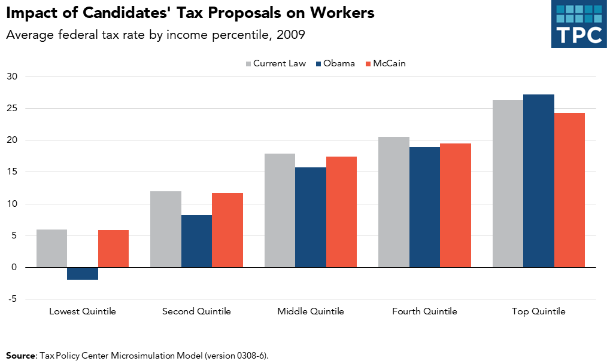
Notes about this chart:
When dealing with political comparisons, lean on the identifiable colors of the parties. Red colors are generally associated with Republicans and blues are generally associated with Democrats
When working on a chart that has political categories, be sure to use a nonpolitical color for baseline or unaffiliated series (in this case, “current law”)
5.2 Bar Charts
5.2.1 When to Use a Bar Chart
To show the trend in one variable, usually across a number of categories
To show multiple variables with multiple bars (if they are on the same scale)
To show the same variable for multiple observations with multiple lines
This chart is an example of how to use two color families to tell a better story. Here, the CTC series are in shades of gray and the EITC series are in blues
Instead of a key, there is enough room to directly label the series using text boxes. Coordinated text color also helps the user make the connection between the label and the series
X-axis labels should be every 5 or 10 years for time-series data like this, but the chart data starts at 1962. To hack this in Excel, a new column called “chart-year” was created with only the years to show. In R, this was done by setting scale_x_continuous(breaks = c(1962, seq(1965, 2030, 5))) in the code.
It appears that the growth in Medicare and Medicaid spending is a big story in this chart. For that reason, the brightest color in the categorical palette was chosen for that series
Contrast in typographic elements helps establish hierarchy
In the excel example, the x-axis is starting to get a little cramped. To free up some space, consider labeling fewer years.
The legend is positioned to the right of the chart in a vertical layout. The order matches the order of the data in the columns
5.3.4 Case Study: Alternative to a Stacked Column Chart
Often, when you want to show composition across several dimensions (usually time), the default choice is a stacked column chart. Though this is not a bad chart type, often a story can be better told by using a different chart.
library(ggplot2) library(dplyr)library(tidyr)library(tpcthemes)extrafont::loadfonts(device ="win", quiet =TRUE)# create dataframeincome_composition <-data.frame(income_bracket =c("$1 under $25,000","$25,000 under $50,000","$50,000 under $100,000", "$100,000 under $500,000","$500,000 under $1,000,000", "$1,000,000 under $5,000,000","$5,000,000 under $10,000,000", "$10,000,000 or more"),salaries_wages =c(0.73927727, 0.797819713, 0.758972984, 0.721077848, 0.531701787, 0.376861355, 0.190789666, 0.159875141),interest_dividends =c(0.025533956, 0.01601004, 0.019287589, 0.029618833, 0.060802748, 0.082941101, 0.132491659, 0.140969151),other =c(0.030099708, 0.020335165, 0.016116181, 0.021752209, 0.030421795, 0.038728583, 0.040360284, 0.040055732),retirement =c(0.11742145, 0.130528372, 0.166143997, 0.117725659, 0.042411385, 0.031257655, 0.00960259, 0.006638),business_income =c(0.086598818, 0.032384335, 0.032981361, 0.083935307, 0.231632087, 0.273865478, 0.184940527, 0.170038303),capital_gains =c(0.001068798, 0.002922375, 0.006497888, 0.025890144, 0.103030198, 0.196345828, 0.441815275, 0.482423672)) %>% tidyr::pivot_longer(cols =-income_bracket, names_to ="series", values_to ="value") %>%mutate(series = stringr::str_replace_all(series, "salaries_wages", "Salaries and wages"),series = stringr::str_replace_all(series, "interest_dividends", "Interest and dividends"),series = stringr::str_replace_all(series, "other", "Other"),series = stringr::str_replace_all(series, "retirement", "Retirement"),series = stringr::str_replace_all(series, "business_income", "Business income"),series = stringr::str_replace_all(series, "capital_gains", "Capital gains")) %>%mutate(series =factor(series, levels =c("Salaries and wages", "Interest and dividends", "Other", "Retirement", "Business income", "Capital gains")),income_bracket =factor(income_bracket, levels =c("$1 under $25,000", "$25,000 under $50,000", "$50,000 under $100,000", "$100,000 under $500,000", "$500,000 under $1,000,000", "$1,000,000 under $5,000,000", "$5,000,000 under $10,000,000", "$10,000,000 or more")))# small multiples area chartsggplot(income_composition) +geom_col(aes(x = income_bracket, y = value, fill = series)) +facet_wrap(~series, nrow =1,labeller =label_wrap_gen(width =10)) +scale_y_continuous(labels = scales::percent_format(),breaks =seq(0,1,0.25),limits =c(0,1),expand =expansion(mult =c(0, 0.05))) +labs(title ="This is the Title and Highlights the Key Takeaway of the Chart",subtitle ="This is the subtitle and explains the chart",x =NULL,y =NULL,caption ="Source: Source information goes here." ) +tpc_theme() +scale_fill_manual(values =c("Salaries and wages"="#174a7c","Interest and dividends"="#f0573e","Other"="#fcb64b","Retirement"="#008bb0","Business income"="#bcbec0","Capital gains"="#000000")) +scale_x_discrete(labels =c("$0-25K", "$25-50K", "$50-100K", "$100-500K", "$500K-1M", "$1M-5M", "$5M-10M", "$10M+")) +theme(axis.text.x =element_text(angle =90, hjust =1, vjust =0.5))
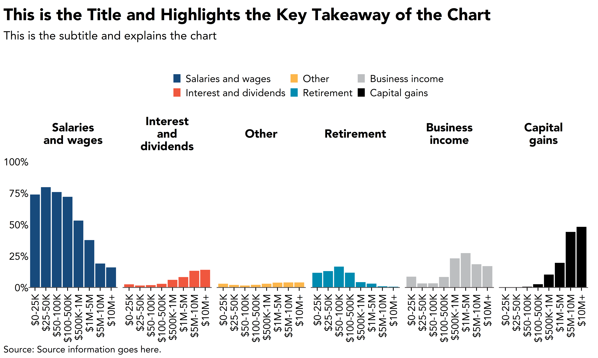
Rather than use an area chart, we want to use a column chart to demonstrate that these are discrete categories rather than continuous points on the x-axis.
Contrast this with Excel, where it’s possible to make area charts using discrete x-values. However, a bar chart is still better (shown below).
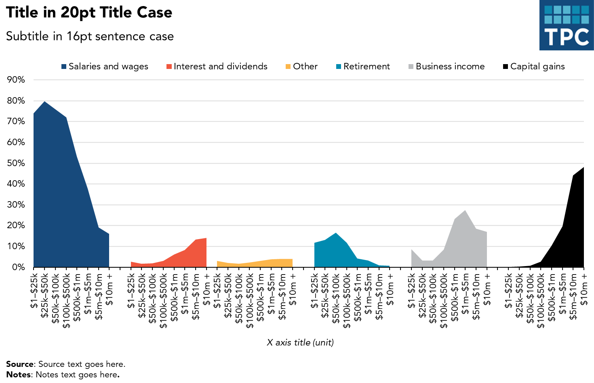
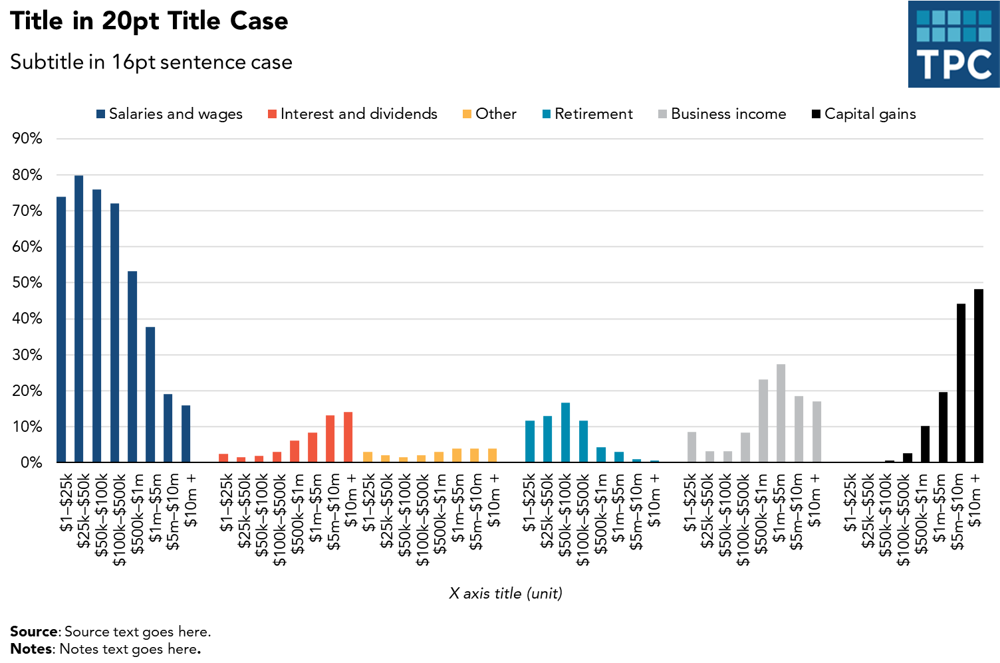
Notes about this chart: - If the story for this chart is about the distribution of any given series, small multiple area charts are the way to go - For example, it’s easy to see that the lower-earning groups get most of their income from salary, whereas the highest-earners get more from capital gains - The colors here are unnecessary—there’s no need to code the data by color because they’re all separate. However, the contrast the colors give each category is visually appealing
5.4 Line Charts
5.4.1 When to Use a Line Chart
To show the trend in one variable, usually over time
To show multiple variables with multiple lines (if they are on the same scale)
To show the same variable for multiple observations with multiple lines
5.4.2 Style Tips
The y-axis should always start at zero
When possible, directly label series. If too close together, use a legend
Avoid individual data markers
Avoid dashed lines
In a single chart, try to keep the maximum number of lines to three or four
Legends should be stretched across the top of the chart and the order should match the order in the chart
Sequential series should be shaded from lightest to darkest for easy comparison
in this code chunk we use the same sample data but format it “long” so that series1 and series2 are not their own columns - instead all values go in one column and their series is identified with another column (see color = series in the geom_line and geom_text commands). We also label each line directly instead of using a legend, see geom_text() and theme(). Feel free to mix and match elements from both
Notes about this chart: - Supposing the data in this chart is categorical, two contrasting colors are used. If the data were sequential, two shades of teal would be used - The x-axis is starting to get a little cramped. To free up some space, reduce the number of labels or change the year format
The debate concerning the effectiveness of pie charts is among the most contentious in the field of data visualization. Many people love pie charts—they are familiar, easily understood, and present “part-to-whole” relationships in an obvious way. However, others argue that because pie charts force readers to make comparisons using the areas of the slices or the angles formed by the slices—something that our visual perception does not accurately support—they are not an effective way to communicate information.
Pie chart slices that form 90-degree right angles—that is, slices that form one-quarter increments—are the most familiar to our eyes. Other amounts are more difficult to discern. For that reason, a column or bar chart is preferable in most cases.
The current thinking is pretty much summed up by this quote from data visualization pioneer Edward Tufte: “Pie chart users deserve same suspicion+skepticism as those who mix up its/it’s, there/their. To compare, use little table, sentence, not pies.”
That’s not to say that pie charts don’t have a place when communicating research. They’re OK to use when the number of slices are fewer than four or five—and when you’re trying to tell a clear ‘part-to-whole’ story about a single slice.
library(ggplot2)library(dplyr)library(tpcthemes)extrafont::loadfonts(device ="win", quiet =TRUE)# create example datapiedata <-data.frame(series =c("Defense","Domestic","International"),value =c(688955,621410,40527)) %>%mutate(share = value/sum(value)) # pie chart with each slice labeledggplot(piedata, aes(x ="", y = value)) +geom_bar(stat ="identity", width =1, color ="white", size =1, fill ="#008bb0") +coord_polar("y", start =0, clip ="off") +geom_text(data = piedata %>%mutate(csum =cumsum(value) - value/2,x_pos =case_when( series =="Defense"~1.5, series =="Domestic"~1.8, series =="International"~1.6 )),aes(x = x_pos, y = csum, label =paste0(series, " (", scales::percent(share), ")")), family ="Avenir TPC", size =3.5,hjust =0) +tpc_theme() +labs(title ="Title in 20pt Title Case",subtitle ="Subtitle in 16pt sentence case",x =NULL,y =NULL,caption ="Source: Source here in sentence case.") +theme(legend.position ="none",axis.line =element_blank(),axis.text =element_blank(),plot.margin =margin(l =-50, unit ="pt"))
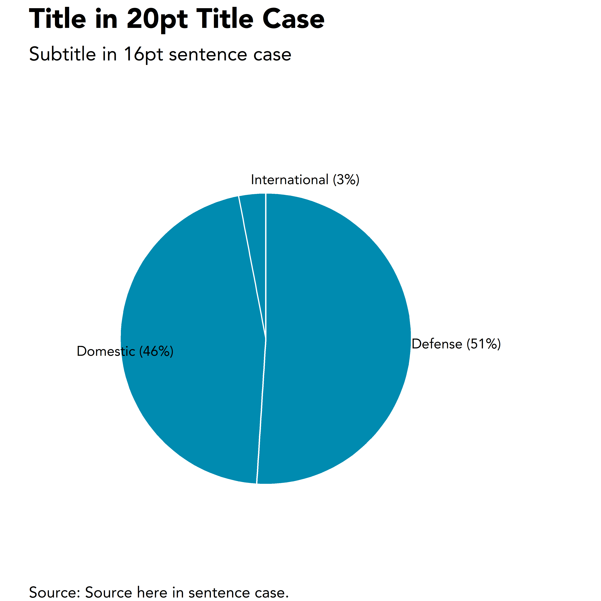
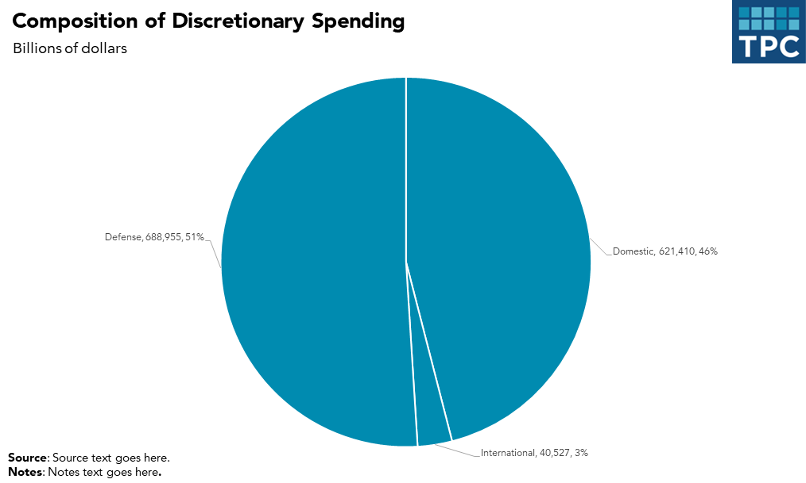
Notes about this chart:
Some times, pie charts are useful. In this case, the largest slice is 51%, a value that is very easy to recognize because our eyes can easily find the 50% mark
Pie charts work extremely well when they have fewer than four or five slices
It’s helpful to directly label each slice. Relying on a key requires the reader to do too much work
With only a few colors and direct labels, extra colors become distracting
library(ggplot2)library(dplyr)library(tpcthemes)extrafont::loadfonts(device ="win", quiet =TRUE)# create example datapiedata <-data.frame(series =c("Defense","Domestic","International"),value =c(688955,621410,40527)) %>%mutate(share = value/sum(value)) # bar chart alternative to pie chart with each bar labeled with $ggplot(piedata, aes(x = series, y = value)) +geom_col(color ="white", size =1, fill ="#174a7c", position ="dodge") +geom_text(aes(label = scales::comma(value)), family ="Avenir TPC", size =3.5,hjust =0.5, vjust =-0.5) +tpc_theme() +scale_y_continuous(expand =expansion(mult =c(0, 0.1)),labels = scales::comma) +labs(title ="Title in 20pt Title Case",subtitle ="Subtitle in 16pt sentence case",x =NULL,y =NULL,caption ="Source: Source here in sentence case.") +theme(legend.position ="none")
library(dplyr)library(ggplot2)library(tpcthemes)extrafont::loadfonts(device ="win", quiet =TRUE)income_data <-data.frame(category =c("Capital gains", "Business income", "Salaries and wages", "Interest and dividends", "Other", "Retirement"),value =c(0.48, 0.17, 0.16, 0.14, 0.04, 0.01)) %>%mutate(category =factor(category, levels =c("Capital gains", "Business income", "Salaries and wages", "Interest and dividends", "Other", "Retirement"))) %>%arrange(desc(value))# col chart alternative to pie chart, still with salaries and wages in light blueggplot(income_data, aes(x = category, y = value, fill = category)) +geom_col() +scale_fill_manual(values =c("Capital gains"="#174a7c","Business income"="#174a7c","Salaries and wages"="#b0d0db","Interest and dividends"="#174a7c","Other"="#174a7c","Retirement"="#174a7c")) +geom_text(aes(label = scales::percent(value)),family ="Avenir TPC", size =3.5,hjust =0.5, vjust =-0.5) +tpc_theme() +scale_y_continuous(labels =NULL, expand =expansion(mult =c(0, 0.05))) +labs(title ="Title in 20pt Title Case",subtitle ="Subtitle in 16pt sentence case",x =NULL, y =NULL,caption ="Source: Source here in sentence case.") +theme(legend.position ="none")
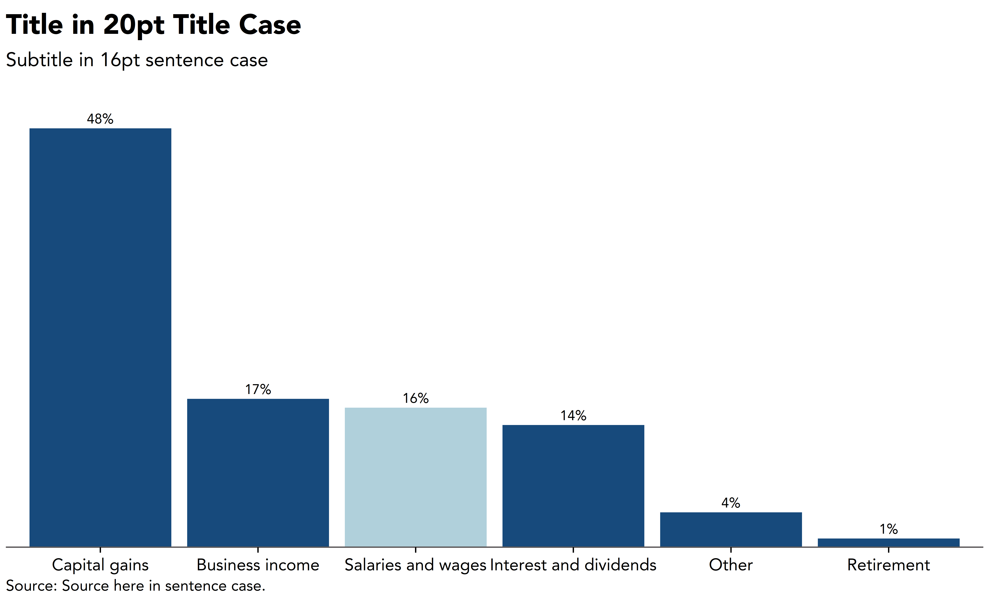
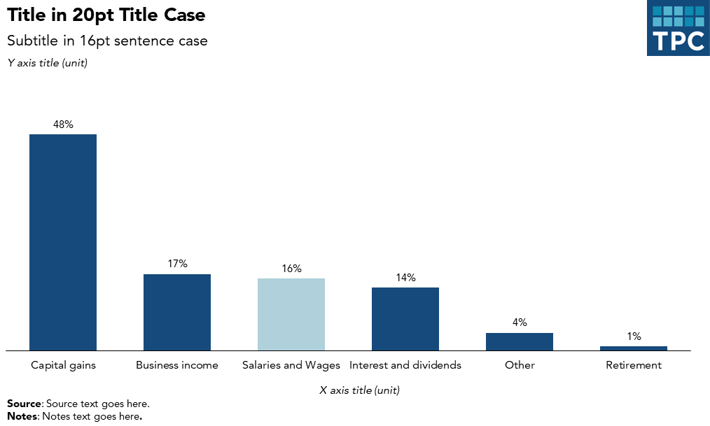
6 Additional Resources
Have a question or looking for more help? Contact Lillian Hunter.